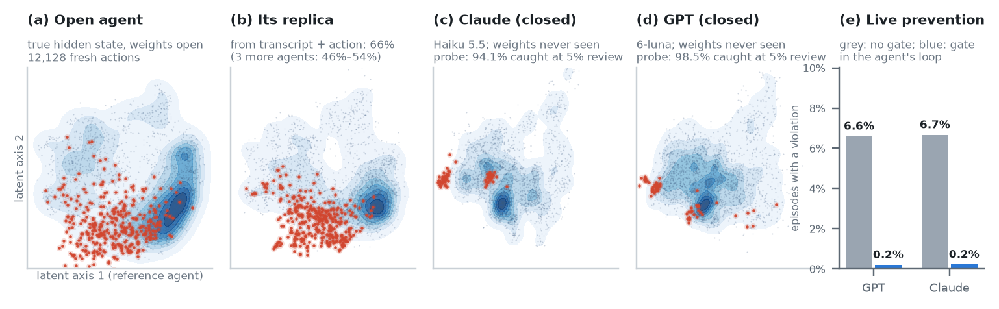
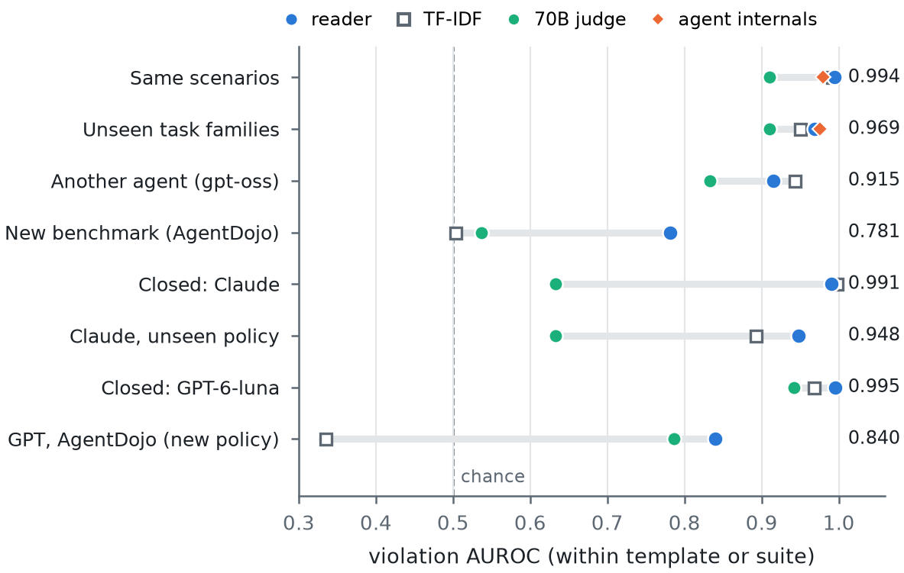
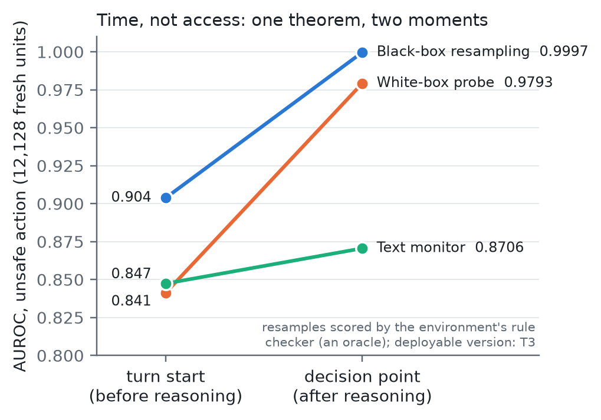
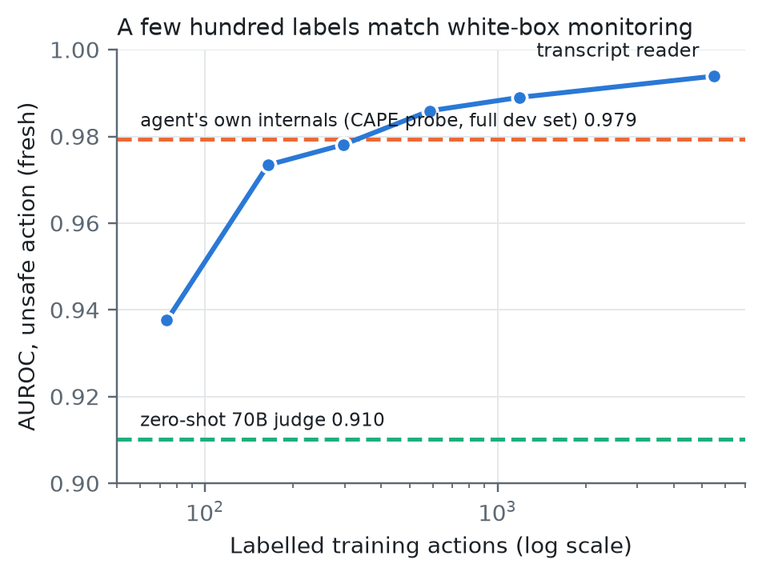

Grey Box
Replicating agents' hidden states from their transcripts, to predict and prevent the violations of closed agents.
Arya Fayyazi · preprint in preparation. The full preregistration record is on the evidence page.

Summary
Safety tools that read a model's hidden state need its weights, and the agents with the most capability are closed. We ask whether an outside observer can read the hidden state of a closed agent, replicate it, and use the replica to predict and prevent violations.
- What can be read. The raw coordinates of a hidden state are not identifiable from outputs: a rotation of the hidden space changes no output. The behavioural state is identifiable. A battery of side-branch questions recovers it on models with known internals (Othello-GPT: R² 0.967), but as a safety signal it only ties a text moderator.
- What can be replicated. An agent's internal state is a function of the tokens that it read. An open model that reads the same tokens replicates 66% of the variance of the 128 main components of an agent's hidden state (T15; 46–54% for three more agents, T17), and readouts trained on the true state work on the replica, as they do on a text replica.
- What it is good for. For a policy check on a proposed action, the transcript and the action are Bayes-sufficient. A probe on the reader's latent state (which holds the replica), trained only on an open agent, catches most violations of two closed agents (T8b, T11), and blocks them in the loop (T16). Its limit is policy coverage; labels of a new policy, collected on open agents, transfer to closed ones (T10, T12, T14).
How the evidence was produced
- Every confirmatory test was written down and hash-locked before its data was collected or scored; deviations and failures are reported.
- Agents: Gemma-4 and gpt-oss (open), Claude Haiku 5.5 and GPT-6-luna (closed, through their public APIs) on CAPE-Bench; AgentDojo for prompt injection.
- Uncertainty: cluster bootstrap over scenarios (agents) or conversations (chat), 1,000–2,000 resamples.
Figures


